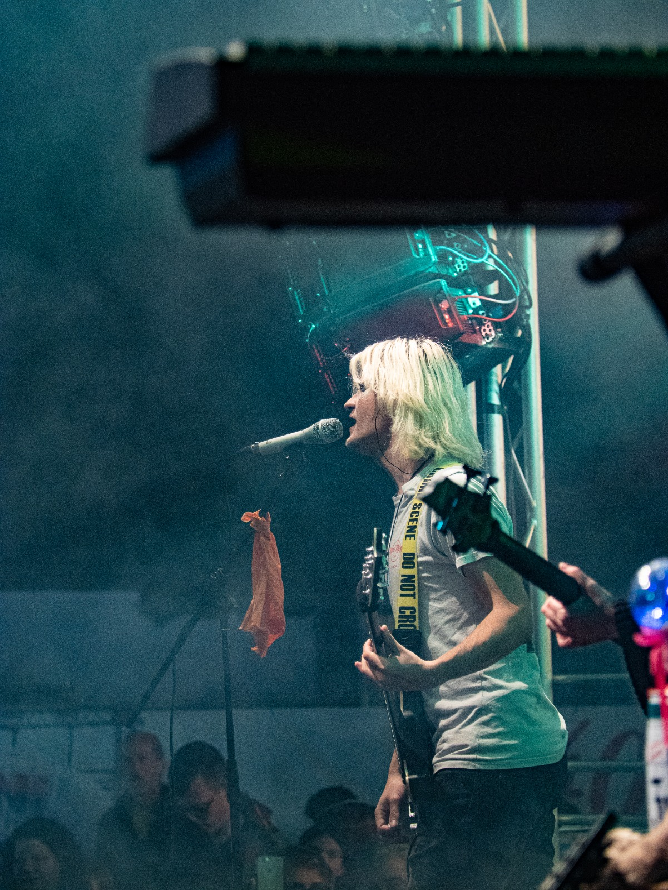

Dawid Mikler, Diploma Audio Engineer
Professionelles Audio Editing und Mixing für Sprache, Podcasts und Musik.
Referenzen ansehenPodcasts, Interviews, Sprachaufnahmen, Rauschreduzierung, Schnitt und Optimierung.
Pop, Rock, Punk und Metal. Authentische und druckvolle Mixe für Streaming und physischen Release.
Lautheitsoptimierung, Klangveredelung und finale Vorbereitung für Streaming-Plattformen.
Aktuell entsteht mein öffentliches Portfolio.
Nach Abschluss meines Studiums zum
Diploma Audio Engineer arbeite ich
an mehreren Projekten, die nach ihrem Release
hier veröffentlicht werden.
Bis dahin findest du auf meinem YouTube-Kanal
Beispiele meiner Arbeit als Musiker,
Produzent und Audio Engineer.

Hi, ich bin Dawid – Audio Engineer,
Mediengestalter Bild und Ton und Musiker
aus der Region Hannover.
Meine musikalische Reise begann mit elf Jahren
an der Gitarre. Heute verbinde ich meine Erfahrung
als Musiker mit meiner Leidenschaft für Recording,
Editing und Mixing.
Mir ist wichtig, dass Künstler authentisch
klingen und ihre Persönlichkeit im Mix erhalten
bleibt. Jedes Projekt verdient einen individuellen
Ansatz statt vorgefertigter Lösungen.
Lass uns über dein Projekt sprechen.
Ob Podcast, Sprachaufnahme
oder Musikproduktion –
ich freue mich auf deine Nachricht.